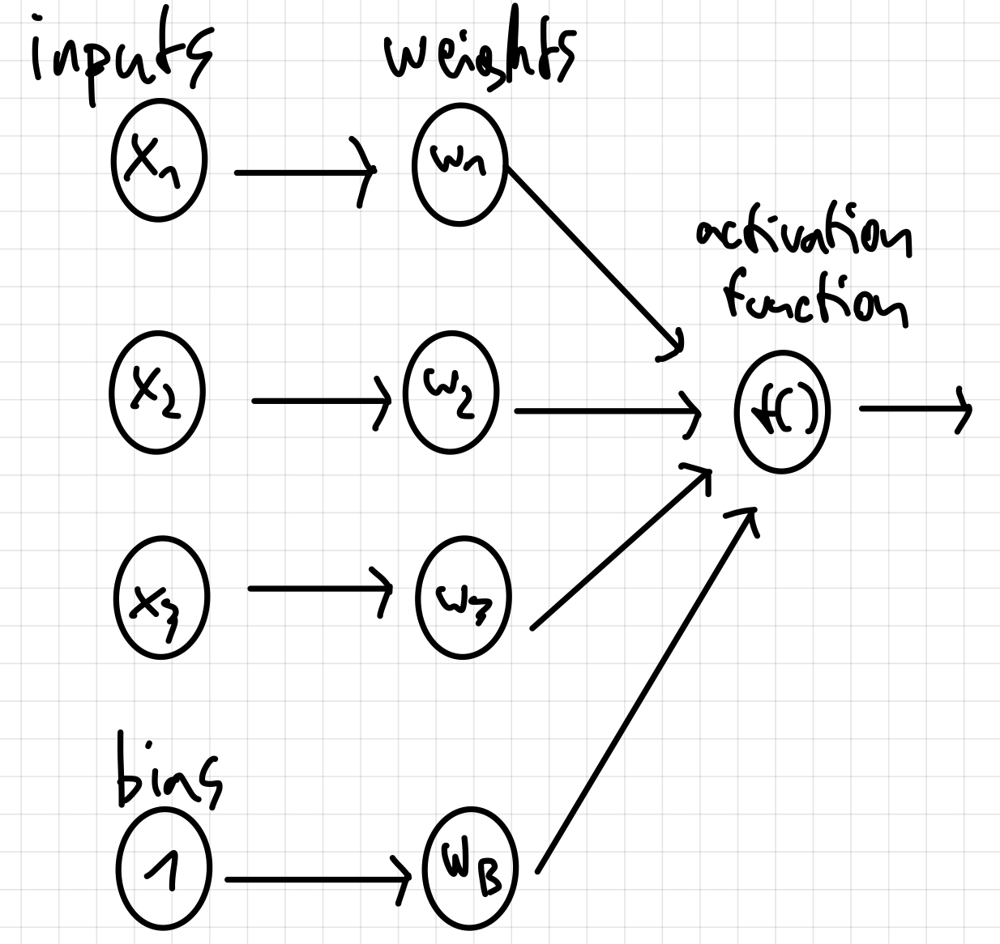
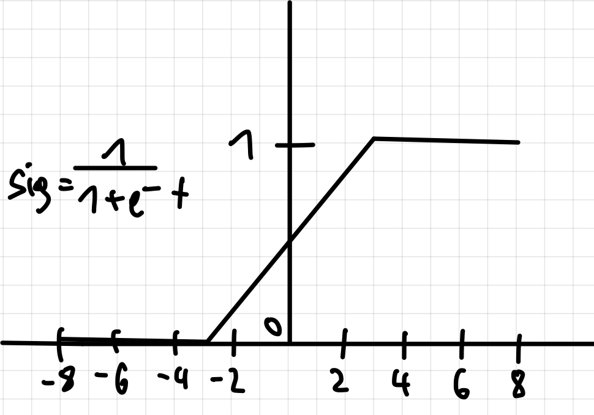
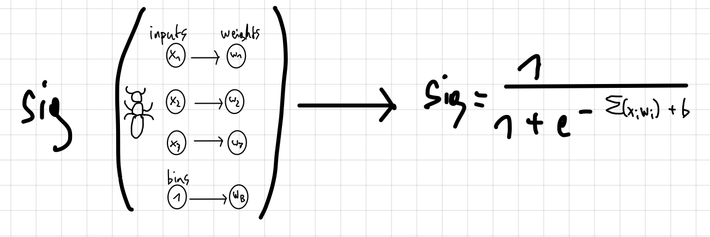

21.08.2021
Artificial Neural Network

That's an artificial neural network reduced to a minimal form. Imagine that our aim is to catch the queen of the popular Paraponera, also called bullet ant - we wanna know the best time possible to catch this ant.
Inputs
If we wanna achieve our aim of catching the ant we have to look over some factors which play an important role for a successful hunting. There are factors like season, place, equipment and many more. These factors are necessary for our network to have something with which it can work - producing an output.
Weights
It's easy to imagine that not all factors have the same weight, because one input could play a more important role than another one. For example the place is probably more important than the equipment because if you try to go hunting in a bavarian forest with a high quality outfit the only thing that you could see would be sweet Formica rufas which are in our terms easily wood ants. But if you try your luck in Nicaragua then you find no matter which equipment with a higher probability some not so sweet bullet ants.
A neural network is a self learning construct - this means how you define the weights at the beginning is for the network not so important because it will find out which inputs are important for the aim and which not.
Bias
Imagine that we while planning our trip to Nicaragua researched with one book which was written from one specific person - this person wrote about stuff which was not to 100% correct and leaves us now with a typical bias. That our neural network can perform still in the best possible way - it needs to take this bias into account. The bias has to be numerical like every value in the network. If for example the actual perfect daytime for hunting the ants 6 am but we read in our book that the best time is 9 am (if our defined goal is different and time is now an input) then we are biased and we have to bring this bias into a numerical form into our network.
Activation function
Now math gets into the game because we are applying the activation function to everything which we collected yet. Our network needs something with which it can work - some generalization. Like neurons in our brain which fire an electrical impulse only if a certain threshold on milliamps is achieved - a binary thing - firing/not firing. Our network does the same to predict our output. Only the neurons which are important enough can play a role for the output. We take our inputs, weights and biases and put them into a function which gives us the format of a number in the range of 0 and 1 (in this case of the activation function). There are different functions with advantages and disadvantages in certain scenarios but let's take a look at the sigmoid function.
It's pretty simple because we only have to but the sum from every input multiplied with his weight and the bias added to it - there where you see the “t” in the sigmoid function and you get your wished output value - the best time (not after the first time where you go through the network because it has to learn) to have fun with our Paraponeras.
Conclusion
Thats it - a simple format of how the easiest way of an artificial neural network works. This structure and adapted with some more fancier things is used for every kind of artificial neural network.
Max Hager